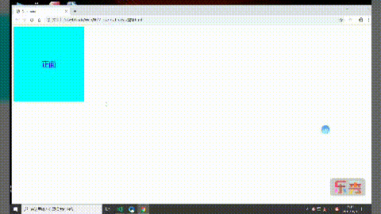

1、我们先设置两个盒子大小，颜色等等，然后定位重叠在一起，最后再进行动画设置
例子如下：
<style>
.box {
height: 300px;
width: 300px;
position: relative;
}
.zh,
.fan {
height: 300px;
width: 300px;
line-height: 300px;
font-size: 30px;
text-align: center;
color: blue;
transition: all 2s;
backface-visibility: hidden;
/* 背面不可见 */
position: absolute;
top: 0;
left: 0;
}
.zh {
background-color: aqua;
}
.fan {
background-color: aquamarine;
transform: rotateY(-180deg) rotateZ(-180deg);
}
.box:hover .zh {
transform: rotateY(180deg) rotateZ(180deg)
}
.box:hover .fan {
transform: rotateY(0) rotateZ(0);
}
</style>
</head>
<body>
<div class="box">
<div class="zh">正面</div>
<div class="fan">反面</div>
</div>
</body>2、效果如下：

---恢复内容结束---